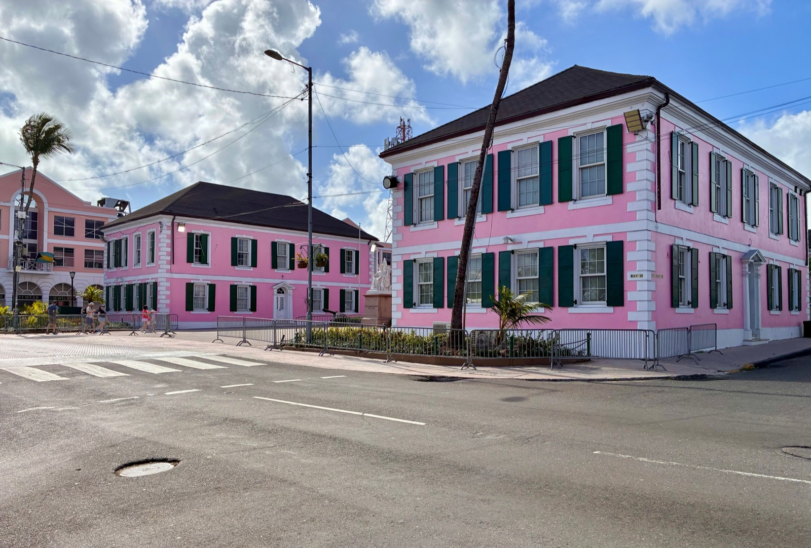
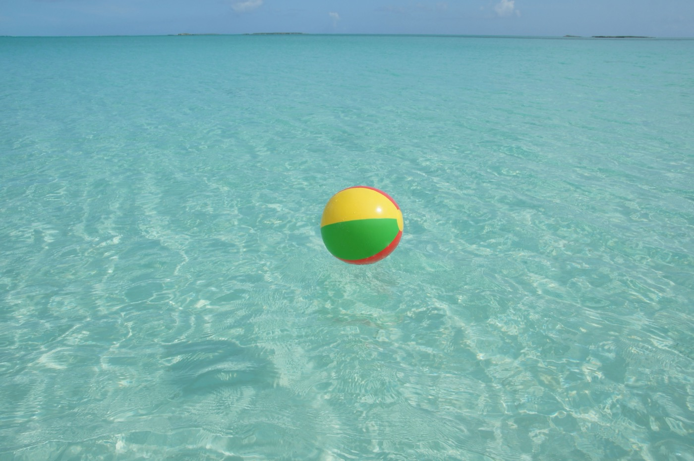

Moving to the Bahamas in 2026
Fifty miles from Florida, English-speaking, on the US dollar, and with zero income tax, the Bahamas is the Caribbean's easiest cultural landing for Americans. Here's what it really costs and how residency works.

For an American, the Bahamas is the softest possible landing in the Caribbean: under three hours from Miami, English-speaking, politically stable, on a dollar pegged 1:1 to the USD, and with no income tax, no capital-gains tax, and no inheritance tax. What that headline hides is the cost of everything else. The Bahamas imports nearly everything, a 10% VAT rides on top at import and again at sale, electricity runs close to triple the US rate, and the flagship residency route now asks for a seven-figure property purchase. Below is what the arithmetic actually looks like.
At a glance
- The tax story is true. No income tax, no capital gains, no inheritance tax, no wealth tax. Revenue comes from 10% VAT, property tax and stamp duty.
- The residency threshold rose to US$1,000,000 on 1 January 2025, up from $750,000. Plenty of guides still quote the old number.
- Budget US$1,120,000, not $1,000,000. Stamp duty and fees do not count toward the threshold, so they sit on top of it.
- Electricity is the hidden cost. BPL charges roughly 33 to 39 cents per kWh, and the average household spends about $4,800 a year on energy, five times the regional average.
- Numbeo puts the cost of living 47.4% above the US, with rent 30.1% higher.
- Citizenship means renouncing your own. The Bahamas does not recognise dual nationality, which makes naturalisation a non-starter for most Americans.
Taxes: the real draw
The Bahamas levies no income tax, no capital-gains tax, no inheritance tax and no wealth tax. That is the reason wealthy Americans and Europeans have relocated here for decades, and it is not qualified or conditional. Revenue instead comes from a 10% VAT on most goods and services, applied at import and again at sale, which is a large part of why the cost of living runs so high. The rest comes from property tax, stamp duty and licensing.
For US citizens, moving here does not end your IRS filing obligations. The US taxes on citizenship rather than residence, so plan with a cross-border accountant before you move.
The property tax bands you will actually pay
This is the tax people underestimate, because "no income tax" gets read as "no tax." Rates are set under the Real Property Tax Amendment Act No. 43 of 2025:
| Band | Owner-occupied | Commercial or rental |
|---|---|---|
| First $300,000 | 0% | 0.75% on the first $500,000 |
| $300,001 to $500,000 | 0.625% | |
| $500,001 to $2,000,000 | 1.0% | 1.0% |
| Above $2,000,000 | 1.5% | |
| Annual cap | $150,000 | $150,000 |
On a $1.2M owner-occupied home that is roughly $8,250 a year. Two practical notes: pay by 31 March for a 10% discount, and pay by 31 December or the balance attracts 5% interest. Properties with unpaid tax can ultimately be sold to recover it.
A change worth tracking
The 2026 to 2027 Budget proposes a new foreign owner-occupied category taxed at a flat 0.625% with no exemption at all. Bahamian realtors have publicly noted the odd result: it would leave Bahamian owners paying a higher 1% marginal rate above $500,000 while foreign owners pay a flat lower rate from the first dollar. It is a proposal, not law. If you are buying near the threshold, ask your attorney where it stands.
Residency: the $1M real-estate route
The main pathway is Economic Permanent Residency (EPR), granted for a qualifying real-estate investment. Key terms (2026):
- Investment: a minimum of US$1,000,000 in real estate (raised from $750k on Jan 1, 2025), held for at least ten years. It's the purchase of a real asset, not a fee.
- Presence: full-time residency is not required, the expected minimum is roughly 90 days a year.
- Family: spouse and dependent children can be endorsed (small per-person fee).
- Fees & timing: government fees run about US$20,000–$25,000; processing typically 6–18 months (investments above ~$2M often get priority review).
What the $1M route really costs
The threshold counts the pure real-estate value only. Stamp duty, legal fees and commission sit on top of it and do not help you qualify, which catches a surprising number of buyers who budget to the round number.
| Line item | Amount (US$) |
|---|---|
| Qualifying property purchase | $1,000,000 |
| VAT on conveyance, ~10% above $100k (commonly split with the seller) | $100,000 |
| Attorney fees, 1% to 2% | $10,000–20,000 |
| Government fee on approval of the certificate | $20,000–25,000 |
| Recording, searches, miscellaneous | $5,000 |
| Realistic total outlay | $1,135,000–1,150,000 |
Two alternatives inside the same programme. The investment can be made in Central Bank zero-coupon bonds rather than property, a route added when the threshold rose. And an investment of $1,500,000 or more buys accelerated review, which can compress the wait from 6 to 18 months down to roughly three weeks. Either way the investment must be held for at least ten years or the Immigration Board may revoke the status.
The citizenship dead end
Permanent residency can lead to naturalisation after ten years. Very few people take it, for one reason: the Bahamas does not recognise dual citizenship. Acquiring a Bahamian passport means renouncing the one you hold. For an American that means giving up US citizenship and potentially triggering the US exit tax, which is a far larger decision than the residency itself.
The honest framing is that Bahamian permanent residency is a lifetime tax-and-lifestyle position, not a second passport play. Judge it on that basis. There is no cheap shortcut to living here long term; the Bahamas is squarely a destination for people who can buy in.
The monthly arithmetic
Plan for expensive. Numbeo's 2026 figures put the Bahamas 47.4% above the United States overall, with rent running 30.1% higher. Imports and the double application of VAT are the drivers, and electricity is the line that surprises everyone.
| Monthly line | Single | Couple | Family of four |
|---|---|---|---|
| Rent | $1,320 (1-bed, central) | $2,200 (2-bed) | $3,500–6,000 (house) |
| Electricity (BPL) | $180–260 | $280–420 | $400–650 |
| Water, internet, mobile | $160 | $220 | $280 |
| Groceries | $600 | $1,050 | $1,750 |
| Health insurance | $250–450 | $550–1,000 | $900–1,700 |
| Transport | $300 | $500 | $700 |
| Eating out and social | $300 | $650 | $800 |
| Private school | . | , | $1,400–3,000 |
| Total | $3,100–3,400 | $5,450–6,050 | $9,700–14,900 |
Why the power bill is so high
Bahamas Power & Light generates from imported fossil fuel for 99.1% of supply, with solar contributing under 1%. Fuel alone accounts for roughly half of a typical bill, at more than 21 cents per kWh before any of the other charges. The all-in residential rate lands between 33.3 and 38.8 cents depending on consumption and which base rate bands you trigger.
An Inter-American Development Bank study found average annual household energy spending of about $4,800, roughly five times the regional average. Air conditioning alone commonly adds $150 to $300 a month. One genuine relief exists: under the Equity Rate Adjustment tariff the first 200 kWh per month is free for residential consumers, which meaningfully helps a small apartment and barely registers on a family home running air conditioning around the clock.
Before you sign any lease or offer, ask for twelve months of actual BPL bills. In this market that single document tells you more about your true monthly cost than the rent figure does.
Buying property & real estate
Foreigners can own freely. Non-Bahamian buyers pay VAT on the purchase (10% above $100k; 2.5% below), typically split with the seller, and there's no capital-gains tax on the eventual sale: a genuinely favorable environment for property investors. Nassau's premium communities and the Family Islands are the main foreign-buyer markets.
Is the Bahamas safe?
The honest picture: crime concentrates in specific parts of Nassau (New Providence), which is why the US rates the country Level 2. Gated communities and the quieter Family Islands feel much calmer, and most expats living in established areas report feeling comfortable with ordinary precautions.
Choosing your island

There are roughly 700 islands and only about 30 are inhabited. The practical choice comes down to how much service infrastructure you need within driving distance.
| Island | Who it suits | Services | Flight to Miami |
|---|---|---|---|
| Nassau & Paradise Island | Anyone needing schools, hospitals and daily flights | Full: international schools, private hospitals, banking | ~55 min, many daily |
| Grand Bahama (Freeport) | Value buyers; a real town with spare capacity | Good, though thinner since the 2019 hurricane | ~45 min |
| Abaco | Boaters and sailors; strong rebuilt expat community | Moderate; clinic-level medical care | ~1 hr |
| Eleuthera & Harbour Island | Quiet, design-led, high-end second homes | Limited; serious care means flying out | ~1 hr 15 |
| Exuma | The famous water; small, seasonal, expensive to supply | Limited | ~1 hr 20 |
| Long Island & the southern chain | Genuine remoteness, lowest prices | Minimal | Connect via Nassau |
One structural point that shapes everything. Almost all freight arrives through Nassau and is transhipped onward, so the further you get from New Providence the more you pay for the same groceries, the same fuel and the same building materials. A Family Island lifestyle is quieter and often cheaper to buy into, and reliably more expensive to run.
Sources & how we checked
Verified on 12 August 2026. Two figures on this page moved recently and are still quoted wrongly elsewhere: the residency threshold rose from $750,000 to $1,000,000 on 1 January 2025, and the property-tax bands were reset by the Real Property Tax Amendment Act No. 43 of 2025.
- Residency: Bahamas Department of Immigration; the Economic Certificate of Permanent Residence terms as amended in the 2024 to 2025 Budget.
- Tax: Department of Inland Revenue and the Real Property Tax Amendment Act No. 43 of 2025.
- Electricity: Bahamas Power & Light published tariffs, plus the Inter-American Development Bank household energy study.
- Cost of living: Numbeo, updated June 2026.
- Safety: US State Department country advisory, Level 2.
Sources conflict on one point worth flagging. The 90-day minimum physical presence for economic permanent residents has been in effect since 1 July 2021, but several current marketing pages still claim no minimum applies. Confirm it with Immigration directly before you rely on it.
Is the Bahamas right for you?
- Great fit if: you want proximity to the US, an English-speaking, dollar-based life with zero income tax, and can fund a seven-figure property.
- Think twice if: you're on a modest budget (imports + VAT make it pricey), or you want an easy low-cost residency route. There isn't one here.
$1.1 million to qualify, or a house and the land under it.
The Bahamian residency threshold buys you a certificate and a condo. The same capital buys a finished home, the land, and residency several times over on the mainland. Panama and Costa Rica both tax foreign income at zero, both grant residency from around US$150,000 to $200,000, and both put power on your meter at roughly half the BPL rate. If the Bahamas is on your list because of the tax position rather than the islands themselves, it is worth seeing the comparison in full.
Frequently asked questions
Does the Bahamas have income tax?
No. The Bahamas levies no income tax, no capital-gains tax, and no inheritance tax. Government revenue comes mainly from a 10% VAT plus property and stamp taxes. US citizens still have IRS filing obligations because the US taxes based on citizenship.
How do you get residency in the Bahamas?
The main route is Economic Permanent Residency, granted for a real-estate investment of at least US$1,000,000 (as of Jan 1, 2025), held for ten years. Full-time residency isn't required (roughly 90 days a year is expected) and government fees run about US$20,000–$25,000, with processing typically 6–18 months.
How much does it cost to live in the Bahamas?
Expect about 25% above the US with rent included. A single person spends roughly $1,518/month excluding rent (about $1,970 in Nassau), and a city-center one-bedroom rents for around $1,319/month. Imports and a 10% VAT drive the high cost.
Is the Bahamas safe?
It's rated Level 2 (Exercise Increased Caution) by the US State Department, with most concerns focused on parts of Nassau. Gated communities and the Family Islands feel considerably calmer, and expats in established areas generally feel comfortable with normal precautions.
Sources & verification
Figures in this guide were checked against primary and authoritative sources on 27 July 2026. Immigration, tax, and cost figures change, always confirm the current rules with the official body or a licensed professional before acting.
- Bahamas Department of Immigration: official permanent-residency (EPR) rules
- Bahamas Ministry of Finance / VAT, official tax (no income tax; 10% VAT)
- US State Department. Bahamas, Level 2 travel advisory